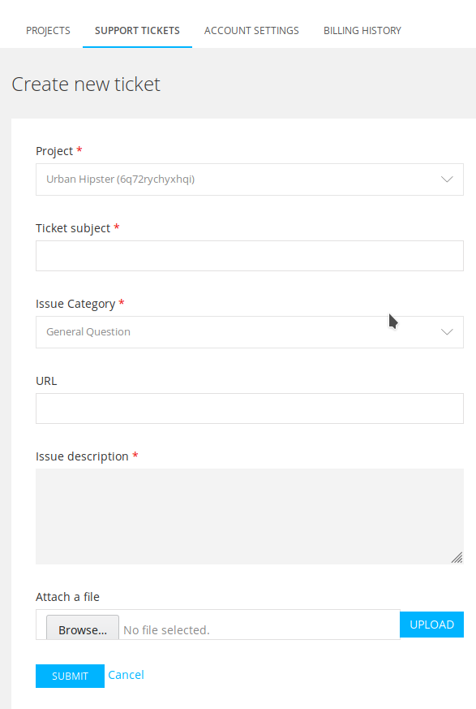

I don't know how popular my website will be. I want to PAYGo.
Spinning up 1 or 100 new projects has no upfront costs.
No hardware. No defining a devops pipeline.
Scaling up or down is just a button click or command line away.
There are no capital costs. At all.
All costs are on-demand operating costs, under your control.
Who has time to setup infinite testing environments?
We do, and it takes just a few minutes, no matter your site.
Want more services in your application? Just add them.
We handle
- Configuration
- Security updates
- Infrastructure
You handle what matters most
Your application
Support included

- In case of trouble, we're your support team, too.
- We've got your back with 24/7 infrastructure support.
No hardware to manage,
no devops to coordinate,
no servers to build
We are your on-demand DevOps team

Problem: I don't know how popular my website will be. I want to PAYGo.
Script
Voice Over (with talking head): One of the advantages of a Platform as a Service is that you don't have capital costs. You can scale your resources as your needs scale.
Show creating a project
VO: Creating a new project takes just a few clicks; there's no servers to buy, no warranties to manage, no circuit breakers to make sure don't break.
Show project launching, see new site.
Show changing plan size, or setting a container size, or whatever the plan is by February.
VO: If you need to scale your site, up or down, that's as simple as changing a few settings.
Show branching to a dev environment
VO: With Platform.sh, you get production and unlimited development environments. Because it's all on a single platform, they can be truly identical.
Show services.yaml with several services in it.
VO: All you need to do is specify what services your application needs, and what versions. We handle the rest, from security updates to optimization to deployment. You can focus on your job, while we focus on enabling you to do your job.
Show ZenDesk?
VO: And if anything does go wrong, our support team is staffed 24 hours a day, 7 days a week, so you can rest easy knowing that you have one of the best teams in the business ready to help you if needed.
VO (with talking head again): All of that is available on demand with no hardware, no infrastructure investment, no big up-front investment.
Shows
CAPEX to OPEX
Reduce DevOps
Single vendor for dev and prod
Keep all services and stacks up to date
Better security
PaaS support team
Easy scaling
Scale for events
Reproducible environments